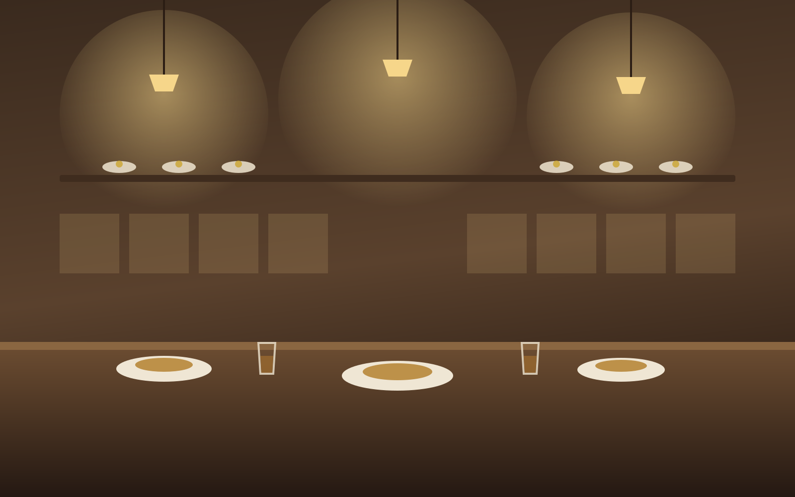

Les Roquetes · Sant Pere de Ribes
Real tapas, served with care
Fried squid, croquettes, the day's stew and paella. Traditional cooking made to order, in a bar where Esteve and his team look after you like family.
The place
A tapas bar, not a restaurant with a long menu
The point is to order several things and share them. Familiar dishes, made to order, and a menu that does not pretend to reinvent anything.
Fried squid
The classic that never misses: light batter, fried to order.
Croquettes
Creamy inside, crisp outside.
The day's stew
Whatever is cooked that day; it changes with the market.
Paella
Rice with seafood, for anyone wanting a main course.
The menu
What there is to pick at
The classics people order again and again, going by what the reviews say.
- Fried squid
- The classic that never misses: light batter, fried to order.
- Croquettes
- Creamy inside, crisp outside.
- The day's stew
- Whatever is cooked that day; it changes with the market.
- Paella
- Rice with seafood, for anyone wanting a main course.
- Patatas bravas
- With the house sauce.
- Tapas to share
- The natural way to eat here: several plates in the middle.
No prices on this page: call or message and we will tell you what is on today.
Reviews
What people say after eating here
Extracts from Google reviews by customers of the bar.
A must try “tapas” experience. Have no doubt, Esteve and his team deliver. Will definitely comeback, thank you 5/5
Such friendly staff, translated the whole menu just for us. Amazing food, really authentic. Coming again!
Everything we had — calamares a la romana, cazuela del día, croquetas, bravas — was delicious and had its own twist. The croquetas are their specialty and it shows: solid, meaty, not flour balls. The owner himself, whose name is Esteve, is a gentle soul and a friendly host. The vermouth is very aromatic.
Find us
How to get here
On Carrer de Roger de Flor, 100, in Les Roquetes (Sant Pere de Ribes). Call to book a table.
- Address
- Carrer de Roger de Flor, 100
08812 Sant Pere de Ribes - Phone
- 628 00 96 23
- Plus Code
- 8FH36PJX+G2
The map only loads if you accept third-party cookies.